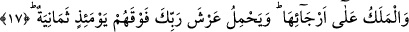
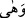

“zayıf” anlamına gelen “vâhiye” kelimesinin aslı; “vehâ’l-binâu-yehî-vayhen”
şeklindedir. Bunun anlamı “bina çok zayıf oldu” demektir. Kamus’un ifâdesine göre “/vehâ” fiili “yırtıldı, yarıldı, herhangi bir şeyin bağı gevşek oldu” anlamlarına gelir.
Müfredat’ın ifâdesine göre ise “vehy” deriyi, elbiseyi ve benzeri şeyleri yırtmak,
yarmak anlamınadır.
17. Melekler onun etrafındadır. O gün Rabbinin arşını bunların da üstünde sekiz
(melek) yüklenir.
“Melekler onun” göğün “etrafındadır.” Melekler yâni melek olarak bilinen
yaratıklar demektir. “Melek” kelimesi “melâike” kelimesinden daha geniş kapsamlıdır.
Görülmez mi ki; “mâ min melekin illâ ve huve şâhidun” ifâdesi “mâ min melâiketin illâ
ve huve şâhidun” ifâdesinden daha geniş anlamlıdır. “Etrafında” şeklinde tercüme
edilen “ercâ” kelimesi “recâ” kelimesinin çoğuludur. Bu ifâde hâldir. Aynı kelimenin,
kendisinden önceye atfedilmiş olması da mümkündür. Buna göre âyet-i kerîmenin
mânâsı şöyle olur: O gün meleklerin sâkin bulundukları gök yarılır, melekler göğün
etrafına sığınırlar.
Âlimlerin ifâdesine göre meleklerin göğün etrafında bulunmaları bir anlık bir süre ile
sınırlı olacaktır, sonra öleceklerdir. Melekler sûra ilk üfürüldüğü esnâda öleceklerdir.
Bâzı âlimlere göre, “Sura üflenince, Allah’ın diledikleri müstesnâ olmak üzere
göklerde ve yerde ne varsa hepsi ölecektir” (ez-Zümer, 39/68) âyet-i kerîmesinde
istisnâ edilenler işte bu melekler ve benzerleridir.
Molla Fenari Fatiha sûresi tefsirinde der ki: Gök zayıfladığı zaman melekler göğün
etrafına inerler. Oradan yeryüzü sâkinlerini büyük bir kalabalık hâlinde görürler.
Yeryüzündeki insanlar sayı itibariyle bulundukları gerçek sayılarının kat katıdır.
Melekler -bu kadar büyük olmalarına rağmen daha önce böyle bir manzara görmedikleri
için- Allah’ın onların aralarına inmiş olabileceğini düşünürler ve dünyadakilere
sorarlar: “Aranızda Rabbımız var mı?” Melekler “biz Rabbımızı tesbih ederiz aramızda
yoktur, O gelecektir” derler. Bu ifâde üzerine melekler yeryüzünün etrafında yuvarlak
bir halka hâlinde insan ve cin âlemini kuşatmış olarak saf tutarlar. İşte dünyaya en yakın
göğün sakinleri bunlardır. Allah birincileri kabzettikten sonra ikinci göğün sakinleri
inerler. Kendi gezegenleri ateşe atılır. Katiba dedikleri yıldız işte bu yıldızdır. Onların
sayısı dünyaya en yakın gökyüzü sakinlerinin sayısından daha fazladır. Bunlar onlara
sorarlar: “Rabbımız aranızda mı?” Melekler birden korkuya kapılırlar ve derler ki:
“Biz Rabbımızı tesbih ederiz o bizim aramızda değildir, O gelecektir.” Bu ifâdeden
sonra birinci grup meleklerin yaptığı gibi yaparak onların arkasında yuvarlak olarak
ikinci bir saf tutarlar, sonra üçüncü göğün sakinleri iner. Onların “Zühre” ismindeki